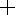

TUI:Guiding
Guiding is controlled by windows in the Guide menu:
- NA2 Guider (the filterwheel and focus are not yet supported from TUI, but you can use text commands).
- Echelle Slitviewer (windowing is not yet supported, but you can use text commands).
- DIS Slitviewer.
All of these guide windows work pretty much the same way, though slit viewers have some extra buttons and there are a few device-specific controls for each camera. Each guide window downloads and displays images and allows you to auto guide or manually guide.
Please take some time to familiarize yourself with the guide windows. They have more hidden functionality than other TUI windows.
Setup
Before attempting to guide, please do the following:
- Make sure a Save To directory is set in Preferences (in the Exposures panel). This is necessary for guide images to be downloaded and displayed.
- Buy a 3-button mouse (if you don't already have one). They are cheap and useful. The guide window makes heavy use of the middle and right buttons.
Download
New guide images are automtically downloaded whenever the appropriate guide window is open. If the Current/Hold button says Current then these newly downloaded files are automatically displayed.
Only the most recent 100 images are saved, and those are deleted when you quit TUI. However, guide images may be left on your disk if TUI is killed or quits unexpectedly. Please check your Save To directory once in awhile to make sure guide images are not accumulating.
The Guide Window
This section describes the elements of the guide window.
Row 1: History Controls
Allows you to select an image from the image history or from disk.
- Left and Right Arrows allow you to see previous images.
- Note: if the next or previous image is out of sequence then the appropriate arrow will be hollow. This will happen if you use the Choose... button to view an image that is not in the history. It will also happen if the history is trimmed while you are viewing an image very near the beginning of the history.
- Current/Hold toggle button allows you to hold the current image or automatically display new images as they come in.
- Warning: most guide controls are disabled unless you are in Current mode!
- Hold is set automatically if you use the history arrows or Choose... button. This is so a new guide image won't overwrite your display.
- When you are done looking at old images, toggle it back to Current. This will update your display to the current image and keep it updated, and will re-enable the guide controls.
- Name field shows the name of the displayed image. You may copy this text but not change it.
- Choose... button allows you to view any FITS file.
- If you select one that is already in the history, you jump there. Otherwise you create a new history entry and the image will be shown as out of sequence (as indicated by hollow left and right arrows).
Row 2: Image Controls
Controls image appearance: intensity scaling, zoom, etc.
- Scaling Function menu sets the image scaling function. Your choices range from Linear to very nonlinear.
- Data Range menu adjusts the range of intensities displayed. 99% means that the central 99% of scaled intensity values are shown in the available shades of gray. All dimmer value are black and all brighter values are white. You can fine-tune the data range by varying the black and white levels.
-  Select Mode:
- Click near the center of a centroid circle to select an existing star. Click away from the center of any circle to select nothing.
- Click and drag about a star to centroid a star. The pixels in the box will be used to compute the centroid and that centroid is selected. In detail: the biggest circle that fits in your box is used, and that circle is shifted as needed so as to be centered on the star.
- Note: if you don't like the radius used for an existing centroid, feel free to centroid the star again.
- Control-Click to move the telescope such that point you click on is centered on the boresight and take a new image. This only works for a slit viewer and only if the image is current (i.e. if the telescope has not been moved since this image was taken).
- Typically you leave the "plus" icon selected and temporarily choose the next two modes by clicking the middle or right mouse button. But you may permanently change modes by clicking an icon.
 Contrast Mode (middle mouse button): adjust the black and white levels. The left/right position of the mouse controls the black level and the up/down position controls the white level. Double-click to restore the default levels. This is a fine adjustment beyond that provided by the data range menu. The middle mouse button will temporarily select this mode.
Contrast Mode (middle mouse button): adjust the black and white levels. The left/right position of the mouse controls the black level and the up/down position controls the white level. Double-click to restore the default levels. This is a fine adjustment beyond that provided by the data range menu. The middle mouse button will temporarily select this mode.
 Zoom Mode (right mouse button): adjust the zoom. Click and drag from the upper left to the lower right to zoom in on the region you select. Drag in the opposite direction to zoom out (zoom out further for a smaller box). Double-click to see the entire image. The right mouse button will temporarily select this mode.
Zoom Mode (right mouse button): adjust the zoom. Click and drag from the upper left to the lower right to zoom in on the region you select. Drag in the opposite direction to zoom out (zoom out further for a smaller box). Double-click to see the entire image. The right mouse button will temporarily select this mode.
- Zoom factor shows the current zoom factor. You may manually set a zoom factor by typing the value and <return>.
- Sat button controls whether saturated pixels are highlighted (in red).
- Mask button controls whether masked (bad) pixels are highlighted (in pale green).
Row 3: Image Pane
The middle area shows the guide image. Typically you will also see circles around stars that have been centroided. Further annotations are planned (for boresight and slit) but are not yet implemented.
All centroids are shown as circles; the radius of the circle is the radius of the data used to perform the centroid. Green circles shown results from "findstars" (which have radii that are automatically determined) and yellow circles show other centroids.
The currently selected star (if any) is shown as an "X". Its color matches the color of the centroid circle.
Row 4: Data Pane
Data about the image at the current cursor and the selected star (if any).
Row 5: Acquisition Controls
Exposure time, bin factor, etc. are all controlled here. If you change a value then the control's background goes pink to indicate the value has been modified. The modified value will be applied if you command an exposure.
- Exp Time exposure time, in seconds.
- Bin bin factor
- Thresh star finding threshold. A pixel is considered to contain signal if its value is at least thresh σ above the median. If you change thresh and type <return> a new find stars is performed
Row 6: Device-Specific Controls
This row (if present) contains controls specific to the current guide camera. See the TUI documentation specific to that guide camera for more information.
Row 7: Guiding Status
The row just above the status bar shows the current state of guiding.
Row 8: Status Bar
The status bar shows help for whatever control is under the mouse and also shows the state of the current or most recent command.
Last Row: Guiding Controls
The guiding controls are very different for a slit viewer vs a sky-facing guider.
Slit Viewer Controls
Slit viewers have one hidden control: control-click on a pixel to center that pixel on the boresight and take a new slitviewer image. This is a handy way to set up automatic guiding or perform manual guiding. Note that control-click only works in select mode and on the current slitviewer image.
The visible controls are as follows (with the less-used controls in the top row):
- Man Guide start manual guiding. To adjust the position either control-click on the center of your object or use the Nudger window.
- Guide on Field Star guide on a selected field star. This keeps whatever pixel is on the boresight centered there, so please be sure your science object is well centered on the boresight before you click this button.
- Expose take a new exposure.
- Guide on Slit guide on your science object. Before you push this button:
- Center your object reasonably well, e.g. by using control-click.
- Make sure you like the centroid on your object. Adjust exposure time and other settings as needed. If you can't get a good centroid with your object down the slit, please don't try to guide on it.
- Stop Guiding stop guiding.
- Cancel cancel the current command and enable the button(s) again. Please give the command a chance to execute before cancelling it.
- DS9 display the current image in the ds9 image viewer (if available).
Guider Controls
- Guide start guiding on the selected star. This button will be grayed out if there is no selected star and it will fail if the image is not current (i.e. if the telescope has been moved since the image was taken).
- Stop Guiding stop guiding.
- Cancel cancel the current command and enable the button(s) again. Please give the command a chance to execute before cancelling it.
- DS9 display the current image in the ds9 image viewer (if available).